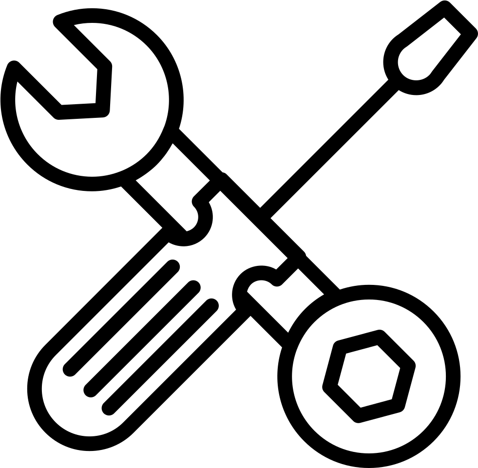

Preguntas frecuentes
La página «Manzanas de la Fortuna» no está disponible por mantenimiento técnico.
Por favor, inténtalo más tarde. ¡Gracias por tu comprensión!
¿Cómo funcionan las predicciones?
Analizamos la distribución de las ganancias y el estado actual de «Manzanas de la Fortuna» para elegir el momento óptimo de la apuesta.
¿Qué precisión tienen las señales?
Con una gestión adecuada del bankroll, la precisión de nuestras predicciones supera el 80 %.

Mantenimiento técnico en curso

 Preguntas frecuentes
Preguntas frecuentes